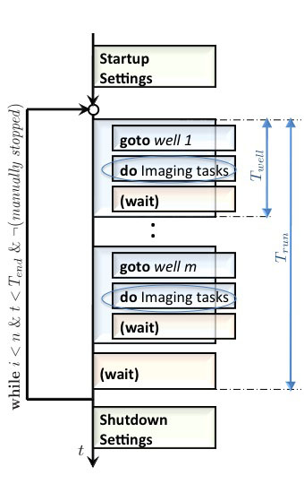
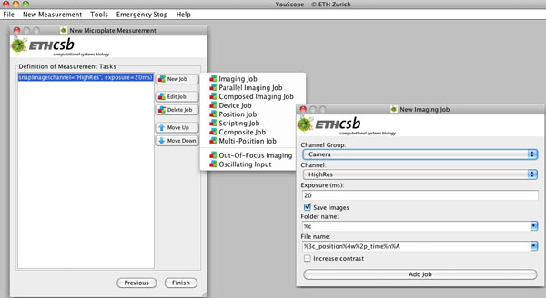
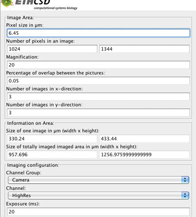
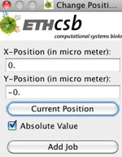
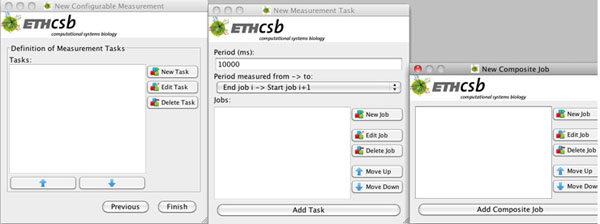
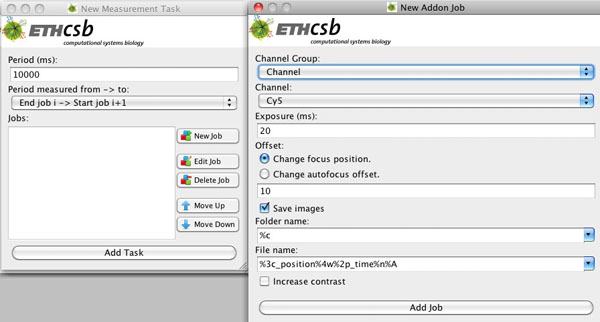

Imaging Procedure in each Well or Position
An imaging procedure can be build up by selecting imaging jobs for the procedure. The jobs are send in the given order to a queue, which is sequentially processed on the microscope as shown in the flowchart in Figure 3. To perform the imaging procedure for a special well several single actions are necessary, like going to a well, making images. These actions, except the imaging procedure, don't have to be specially programmed or selected by the microscopist. By clicking on Add, a popup opens, where the imaging procedure job has to be selected. A job can be deleted with Delete Job, edited with Edit Job or the execution order of the job can be modified with Move Up or Move Down. By clicking on Finished a new window Measurement Control is created where the measurement can be started.
|  | Figure 3: Flowchart of a microplate measurement. The general description of this figure is located in Figure 1 in Measurement Properties for a Microplate Measurement. The number of executions n, the total running time of the measurement T_end as well as stopping the experiment manually defines the duration of the measurement. |
In Definition of Measurement Tasks the following Jobs can be selected
Imaging Job
This job is takes an image in a special channel in the selected wells. After the Job is selected, a new window appears, in which the channel and exposure time can be defined:
- Channel group: Go to Preparation of a Measurement.
- Channel: Go to Preparation of a Measurement.
- Exposure: Go to Preparation of a Measurement.

Parallel Imaging Job
several cameras are necessary, not yet available!!!
Composed Imaging Job
In this job several adjacent areas in a well can be imaged with an overlap, if a large image with high resolution should be composed out of several smaller images. The images can be build together with an external image processing program. For this job informations on the area and channel have to be defined:
- Pixel Size: The pixel size is camera specific and is given by the manufacturer of the camera.
- Number of pixels in an image: These values in pixel-units for the x and y-axis describe the resolution of the camera and are given by the manufacturer or easily obtained by making an image and looking at this position..
- Magnification: The current magnification of the microscope has to be profiled here.
- Percentage of overlap between the pictures: To overlay the pictures correctly and to build up the whole picture, commonly an overlap between the single picturesis necessary. Usually 10%-30 % is a good value.
The next fields are output fields, which display the dimensions of the area from above in μm-units:
- Size of one image in μm: The size of Δx or Δy can be calculated with the formula
Δx_area=(Δl_pixel * nx / magnification)
The value of Δy is calculated in an equivalent way. - Size of totally imaged area in μm: Here the total size in the x- and y- direction of the assembled picture are displayed in the corresponding fields. They are calculated by,
Δx=(Δl_pixel * nx / magnification)*(1-overlapp) * mx
with Δl_pixel as the size of a pixel, nx the number of pixels in the x-direction and mx the number of images to be made in the x-direction.
The value of Δy is calculated in an equivalent way
- Channel Group: Go to Preparation of a Measurement.
- Channel: Go to Preparation of a Measurement.

Device Job
If some devices, like binning of the camera or light intensity, have to be changed between the imaging jobs, this can be done by adding a Device Job to the task.

Position Job
If the position of the stage between two jobs has to be changed, a Position Job can be added between these jobs, where the values of the new position are entered. In the upcoming window the x- and y-value, relative or absolute in μm have to be fed in. If the option Absolute Value is selected, the values in the fields x and y define the position corresponding to the origin used by the microscope. If the option Absolute Value is deselected, the values in the fields x and y are the changes of x and y relative to the current position.

Scripting Job
Moritz!!
Composite Job
In composite job it is possible to group related jobs. A parent job (composite job) can contain several children-jobs h. For most purposes a composite job has only visualization proposes.

Multi-Position Job
!!Max!!
Out-off Focus Imaging
Images at different focuses of one position are taken to make the detection of the cells in the sample easier. There are two possibilities to change the focus, one to change the focus position in z-direction or to change the autofocus offset. If the autofocus button on the microscope is pressed, the Change Autofocus option has to be selected.The value for the autofocus change is dependent on the microscope, the objective and the object. The rest of parameters are identical with the ones from Imaging Job.

Oscillating Input
In this job any device parameter can oscillate during imaging. In the up-coming window the parameters for the oscillation can be defined.
{kind=link}
{kind=link}
{kind=link}
{kind=link}
{kind=link}
{kind=link}
{kind=link}
{kind=link}
{kind=link}
{kind=link}
{kind=link}
{kind=link}